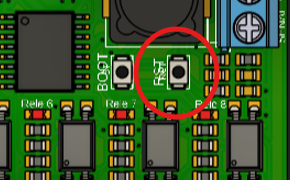

3. Configuración Inicial
Esta configuración la realiza el servicio técnico antes de la entrega del equipo vending. El usuario final no debe realizar ninguna de estas configuraciones, ya que podría descalibrar el equipo.
Al iniciar la tarjeta, ir a la opción en menu principal Tipo de Vending y seleccionar el tipo que desea configurar:
- Productos de limpieza
- Productos automotriz
- Granos y semillas
- Croquetas para mascotas
- Purificadora (Incluye DUO, solo agua, solo hielo)
3.1 Desactivación de funciones no utilizadas
- Si no se usará el billetero:
Config → Billetero → Desactivado - Si no se usará el NFC:
Config → NFC → Habilitar → Desactivado - Si no se usará el sistema hopper:
Config → Cambio → Habilitar → Desactivado - Si no se usará el audio:
Config → Audio → Habilitar → Desactivado
3.2 Configuracion solo Agua en purificadora
- Para configurar solamente venta de agua hay que desactivar el sensor de temperatura, ir a:
Config → Sensores → Temperatura → Tipo → Desactivado
3.3 Configuracion solo Hielo en purificadora
- Para configurar solamente venta de hielo hay que desactivar el sensor de presion, ir a:
Config → Sensores → Presion → Desactivado
3.4 Configuracion Purificadora DUO
- Para una purificadora DUO el sensor de presion y el de temperatura deben estar activados:
Config → Sensores → Temperatura → Tipo → Rele
Config → Sensores → Presion → Rele
Después de terminar esta configuración inicial, reinicie la tarjeta presionando el botón RTS.

Ubicación del botón RTS en la tarjeta vending.